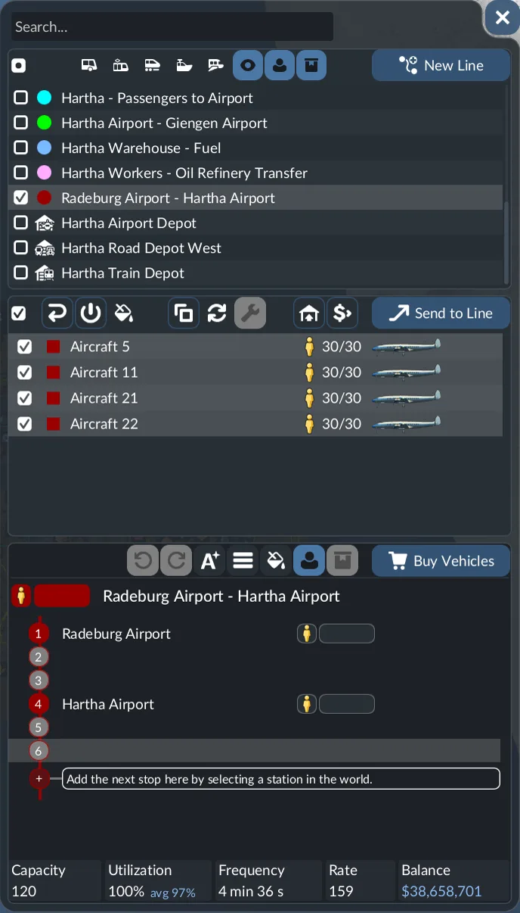
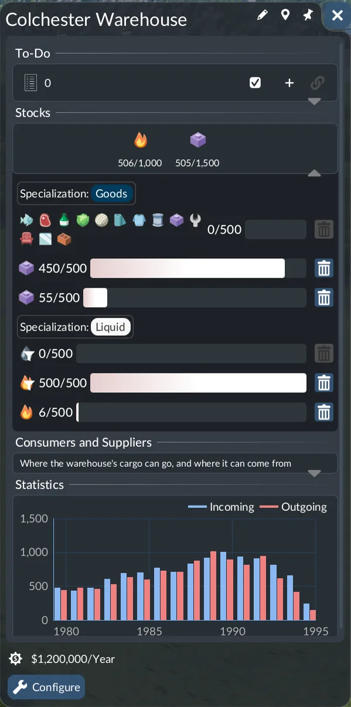

Transport Fever 3 mods
Small, focused additions to the game's own windows: clearer figures, the numbers the game keeps but never shows, and fixes for bugs found along the way.
How the mods work
Every mod follows the same rules.
Lines, cargo, industries, statistics, warehouses and more. Pick the areas you want.
Each feature has its own Off / On setting under the mod's gear when you choose a save's mods.
Features show up where the game already shows that information, in its own style.
A Logging switch, off by default, writes the mod's messages to the game log for bug reports.
The mods
Enhancements
One mod per game system, one switch per feature.

Line Enhancements
Terminals, deliveries, stop figures, fleet sizing, line timing and line costs.

Cargo Enhancements
Cargo flow filters for industries, towns and warehouses, and a supply chain planner.

Industry Enhancements
Correct recipe figures, the workers the boost ignores, worker status, plot growth, comparison columns.
Statistics Enhancements
Rank, sort, town cargo, coverage, vehicle and station columns; red problem buttons.

Warehouse Enhancements
What each warehouse slot really holds, and which cargo fills up next.
Signal Enhancements
Repeat one-way signals at a set spacing; Shift + bulldoze removes a whole stretch.
Vehicle Enhancements
The store's table: running cost, wagon weight and length, figures against the vehicle replaced.
Subsidy Enhancements
How long an offer stays open, how long a reward runs, rings coloured by phase.
Company Enhancements
Population reached and needed for the next rank, and its change over 30 days.
Tools
Windows of their own.
Bug fixes
Work-arounds for game bugs, each removable once the game is fixed.

Bug Fix - Crosswalk Queue
Pedestrians stuck at traffic lights for months: nudges the light so they cross.

Bug Fix - Helicopter Pad Freeze
Frees helicopters frozen on a one-pad helipad, with a pop-up.

Bug Watch - Stuck Passengers
Passengers left behind with seats free: a red icon lists the stops.
Bug Fix - Comfort Bar
A train's Comfort bar no longer counts the locomotive as zero comfort.
Find it in the game
Open a window, see what the mods add there.
- Stuck Passenger Alert · Bug Watch - Stuck Passengers
The mod watches every vehicle that stops at a terminal and notes who was already waiting there for its line.
- Free Frozen Helicopters · Bug Fix - Helicopter Pad Freeze
The mod spots a frozen helicopter within seconds and does what the Reverse ("previous station") button does by hand: it reverses the helicopter off the pad and, once it is clear, reverses it again until it heads back for the same stop.
- Unstick Crosswalks · Bug Fix - Crosswalk Queue
The mod spots such a crossing: walkers standing at the light far longer than a full light cycle, which a working light never lets happen, while its walk phase hasn't come on. - Free Frozen Helicopters · Bug Fix - Helicopter Pad Freeze
The mod spots a frozen helicopter within seconds and does what the Reverse ("previous station") button does by hand: it reverses the helicopter off the pad and, once it is clear, reverses it again until it heads back for the same stop.
Research
Pedestrians who never cross
At signalised crossings in every town of a test map, the walk phase stopped coming on while crowds waited, some for months. Reported with figures from a watch tool, and worked around.
Passengers who never board
Passengers who queue at an overcrowded stop are never picked up afterwards: buses of their line leave with seats free while they keep waiting.
Helicopters frozen on the pad
Traced landing by landing: a helicopter that hovers low while waiting for a one-pad helipad sinks onto the deck and never arrives, blocking the pad for every other helicopter.
Planes that skip waypoints
Where a plane's descent replaces its planned route with a straight-in approach, dropping the waypoints still ahead, and where a last waypoint survives.